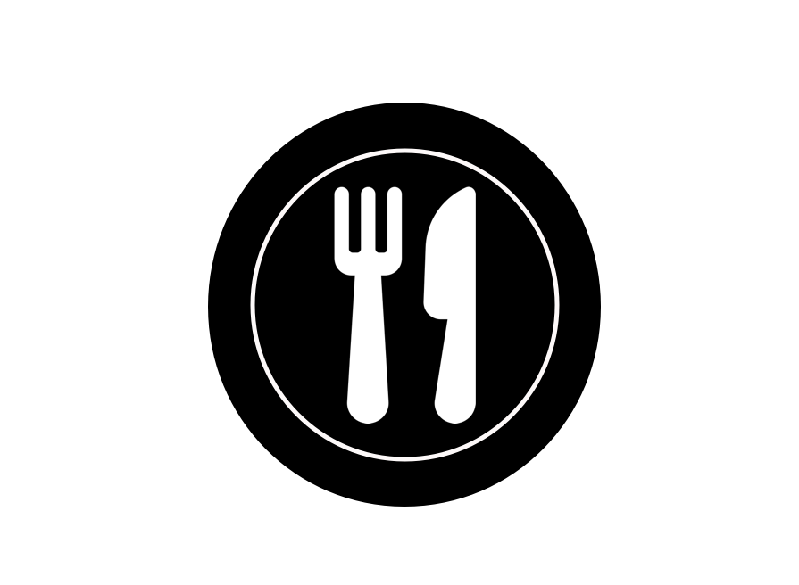

Restaurants
Superbotwoman comes to rescue when your marketing and sales ratios are dropping, when you need new leads and the old ones to stay, when you need to keep up to the new market areas, and when new strategies are at play.
We are the "Messenger Marketing Chatbot" company.
Messenger Marketing Chatbots are bots that cling to your business messenger account and process all user requests.
It is cheap and super-affordable as you need no extra effort to develop a separate application for your business to stand out. Users are tired of downloading apps for every product and then process the benefits. With messenger bots, all you need is a developed bot that processes your user requests and delivers the results quickly. Almost 60% of the people already have Facebook Messenger installed on their phones. Your marketing through same messenger becomes feasible and user-friendly.
We are into the market to provide you with the same chatbot for your messenger with an end to end deliverable integrated with your Facebook page and your website. But, HERE's ths catch! Our content is what makes us "The one" for you.
Because our robots will sound more human than the humans themseleves. *NO KIDDING*